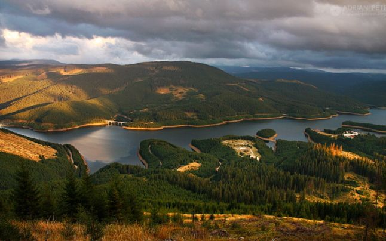
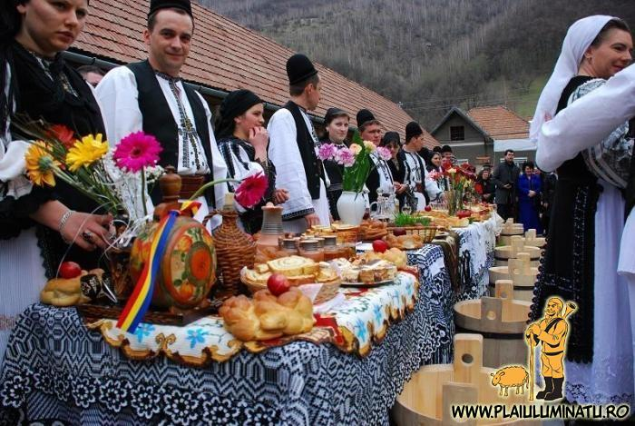

Una dintre cele mai atragatoare si pitoresti vai carpatine o are raul Sebes, care impreuna cu Frumoasa are o lungime de aproape100 km si o suprafata a bazinului de 1289 km patrati.El strabate partea centrala a Carpatilor Meridionali, in portiunea unde acestia prezinta cea mai mare latime, avand o directie generala de curgere dinspre sund inspre nord, dar cu multe coturi provocate de dispozitia sisturilor cristaline.
 YoutubeIn vedera pastrarii in conditii optime a unor peisaje naturale deosebite, precum si a ocrotirii unor specii de plante si animale salbatice, in Valea Sebesului si in Muntii Cindrel si Sureanu din imediata ei vecinatate au fost create mai multe rezervatii naturale.
Iata ce ne spun organizatorii despre aceasta traditie uitata:"Un frumos obicei din comuna Sugag - judetul Alba, a carui origini se pierd in negura timpului aduna in curtea bisericii, a doua zi de Paste, pe toti tinerii casatoriti in anul dinaintea Pastelui. imbracati in traditionalul costum popular sugajean si avand fiecare pereche, in fata lor, o masa aranjata cu cozonaci, oua rosii, prajituri si flori, primeau binecuvantarea pentru o viata lunga si fericita de la preotii satului, iar nasii, rudele si prietenii le faceau daruri cu cele de trebuinta in gospodarie. Ciocneau un ou rosu si inchinau impreuna un pahar de vin sau rachiu dulce."
